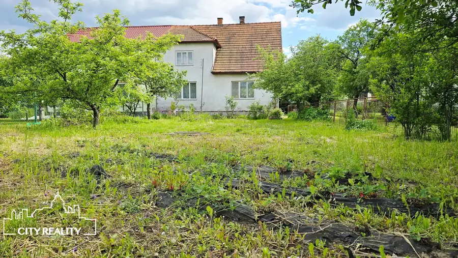
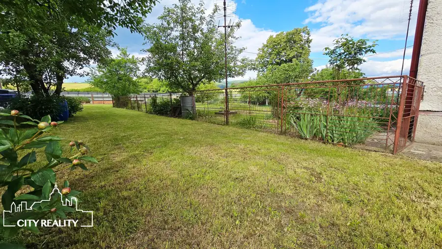
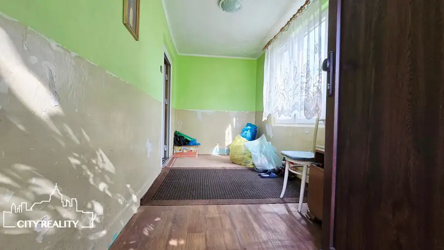
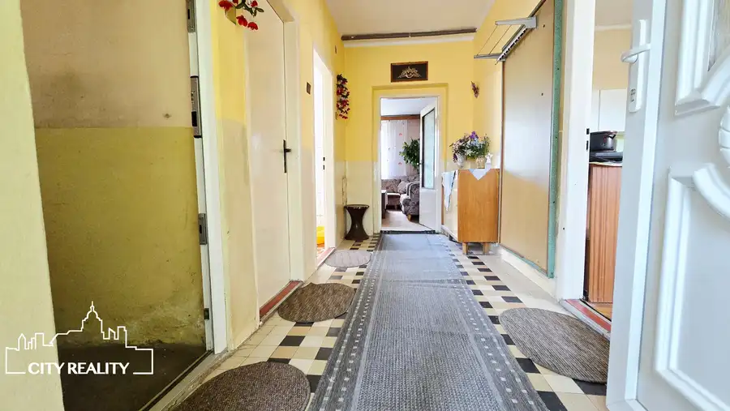
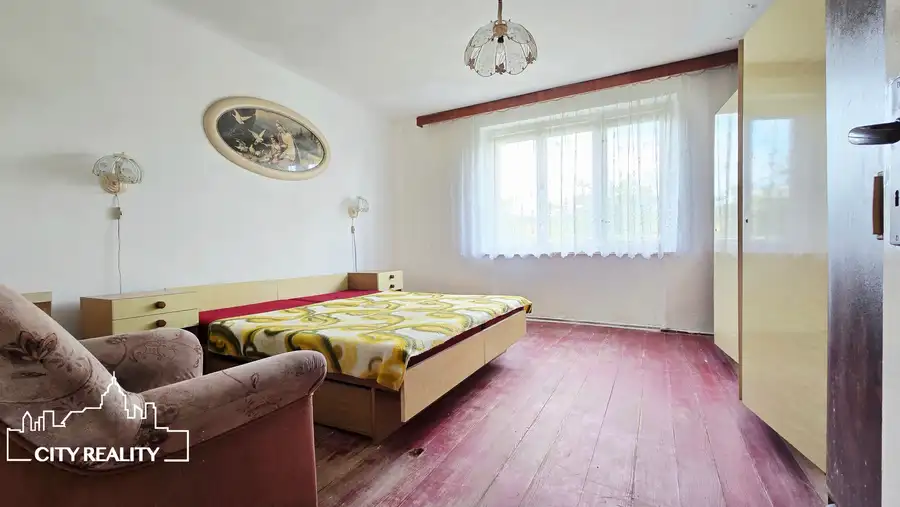
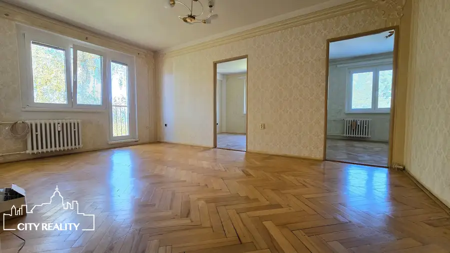
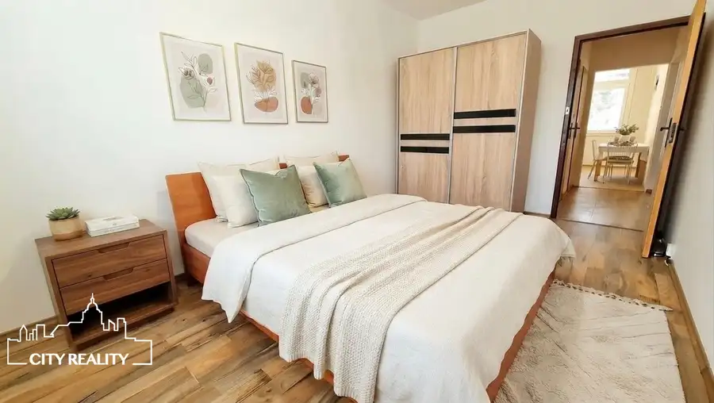
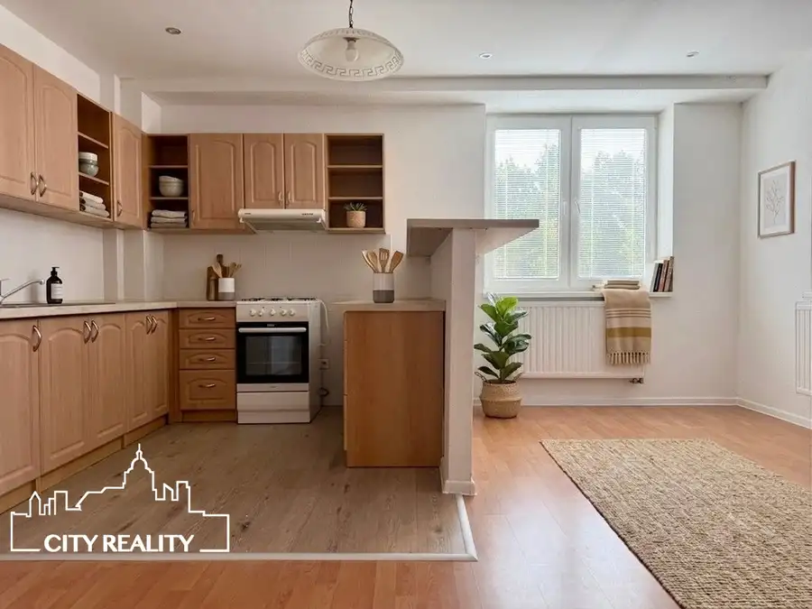

ZNÍŽENÁ CENA! Ponúkame Vám na predaj 3. izbový rodinný dom, pozemok 952 m2, Veľká Čausa
Veľká Čausa





- Plocha164.5 m²
- StavPôvodný stav
- VlastníctvoOsobné
O nehnuteľnosti
City Reality Vám exkluzívne ponúka na predaj trojizbový, poldom, v obci Veľká Čausa. Rodinný dom je postavený na rovinatom pozemku o rozlohe 952 m2. Nehnuteľnosti sú ideálne na celoročné bývanie s výhodami rekreačného účelu a hospodárenia, s možnosťou viacgeneračného bývania.Dispozične rodinný dom pozostáva z dvoch nadzemných podlaží. Na 1. nadzemnom podlaží sa nachádza vstupná chodba, chodba oddeľujúca miestnosti, kuchyňa, dve samostatné nepriechodné izby, kúpeľňa spojená s WC, špajza a schodisko. Na 2. nadzemnom podlaží sa nachádza schodisko, samostatná izba a otvorený priestor, ktorý možno zrekonštruovať na obytné miestnosti. Stručný popis nehnuteľností:- podlahová plocha domu 180 m2- rozloha rovinatého pozemku 952 m2- na pozemku orientovanom na juhovýchodnú stranu boli vykonané terénne úpravy, zasadené ovocné a okrasné dreviny, zasiaty trávnik.Rodinný dom:- postavený v roku 1955 daný do užívania v roku 1960- stavba postavená z pálenej tehly- nepodpivničený- v pôvodnom stave- vodoinštalácia, odpady, komín, strecha - v pôvodnom stave- prívod vody z obecného vodovodu - rekonštrukcia prípojky cca v roku 2018- odpad vedený do žumpy umiestnenej na pozemku - možnosť pripojiť sa na obecnú kanalizáciu - prípojka na hranici pozemku- rozvod elektriny – 230V aj 400V- sedlová strecha s krytinou zo škridly bez zateplenia- niektoré z okien sú vymenené - plastové, iné sú pôvodné - drevené- kúrenie je aktuálne na tuhé palivo - krb v obývačke, pec v kuchyni- na podlahe je betón, dlážkovinaLetná kuchyňa - riadne zapísaná stavba v katastri nehnuteľností:- pridelené súpisné číslo - o rozlohe 74,5 m2- postavená cca v roku 1974 z pálenej tehly- samostatne stojaca, podpivničená, jednopodlažná- dispozične pozostáva z pivničných priestorov, 1. NP pozostávajúceho zo vstupnej chodby, kuchyne a izby, 2. NP - podkrovie- pripojená na elektrinu- krytina - škridlaStavby rodinný dom ako aj letná kuchyňa a pozemok o rozlohe 952m2 sú v osobnom vlastníctve. Pozemky a stavby boli novo geodeticky zamerané v roku 2025, geometrický plán je zapísaný v katastri nehnuteľností. Prečo povedať ÁNO pre túto nehnuteľnosť:- vzdialenosť od mesta Prievidza len 7km- možnosť rekonštrukcie podľa vlastných predstáv- ihneď k dispozícii- možnosť hospodárenia- možnosť viacgeneračného bývaniaCena domu spolu s pozemkom je 95.000 € a kupujúci neplatí žiadne poplatky spojené s predajom a prevodom nehnuteľnosti.Financovanie je možné aj prostredníctvom hypotekárneho úveru, s ktorým Vám ochotne pomôže náš hypotekárny špecialista. Jeho služby sú samozrejme bezplatné.V prípade záujmu o bližšie informácie nás kontaktujte:Michaela Majtenyit.č. +421 944 514 972mail: majtenyi@cityreality.sk
Parametre
- Doprava
- Vlak, Cesta
- Druh
- Rodinný dom
- Druh domu
- Klasický dom
- Dátum zverejnenia
- 17. 06. 2026
- Energetický certifikát budovy
- nie je
- Orientácia
- Juhovýchodná
- Plocha pozemku
- 0 m²
- Podpivničenie
- Čiastočné
- Počet izieb / miestností
- 3
- Počet kúpeľní
- 1
- Počet nadzemných podlaží
- 1
- Počet spální
- 3
- Príprava teplej vody
- Ohrievač na tuhé palivo
- Prístupová komunikácia
- Asfaltová
- Rok výstavby
- 1955
- Stav nehnuteľnosti
- Pôvodný stav
- Telekomunikácie
- Telefón, Internet, Optická sieť, Satelit, Káblová TV
- Terén pozemku
- Rovinatý
- Typ
- Predaj
- Typ konštrukcie
- Tehlová
- Vlastníctvo
- Osobné
- Vybavenie
- Sklad, Záhrada, Dielňa, Krb
- Vybavenie objektu
- Podľa požiadavky
- Vykurovanie
- Lokálne
- Zastavaná plocha
- 164.5 m²
- Zdroj tepla
- Uhlie alebo drevo
- Úžitková plocha
- 164.5 m²
Kde to je


Mohlo by Vás zaujímať

BytNové 79 999 €ZNÍŽENÁ CENA! Ponúkame Vám na predaj 3. izb. byt, 63,4 m2, ul. Boriny, Sebedražie Sebedražie 3-izbový63.4 m²3. podlažie
BytNové 79 999 €Veľkometrážny 3-izbový byt s loggiou | Handlová – Okružná | 70,5 m² Handlová 3-izbový71 m²6. podlažie
BytNové Cena na vyžádáníZrekonštruovaný 2-izbový byt s výťahom | Centrum Prievidze | Voľný ihneď Prievidza 2-izbový52 m²2. podlažie